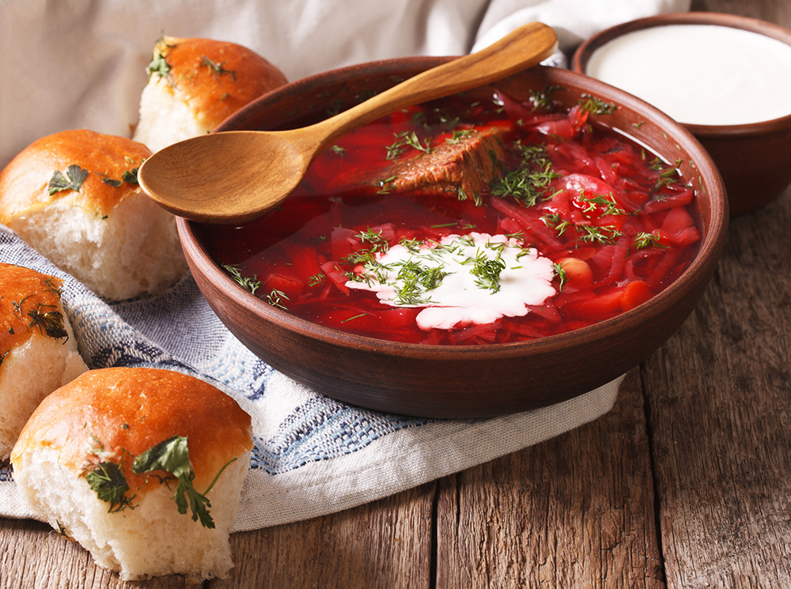
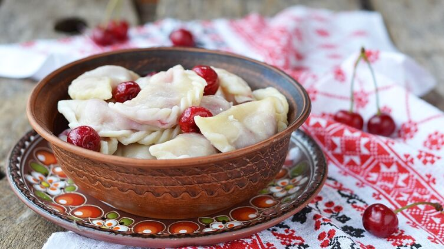
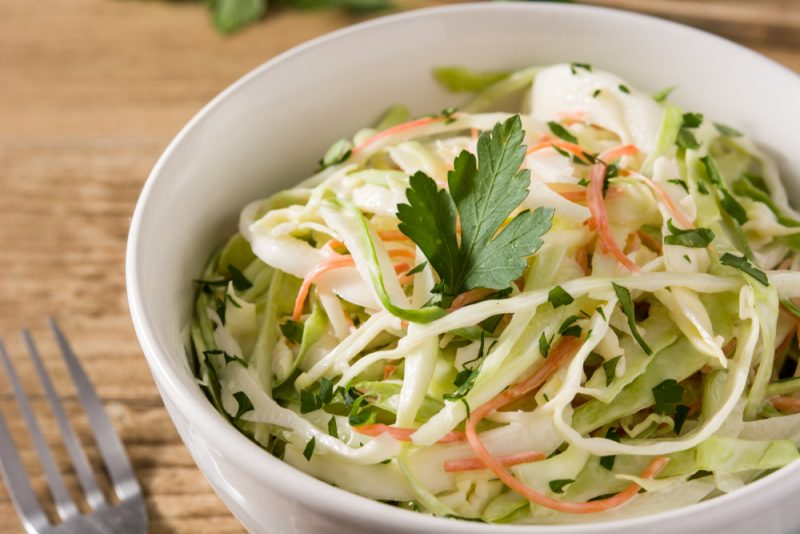
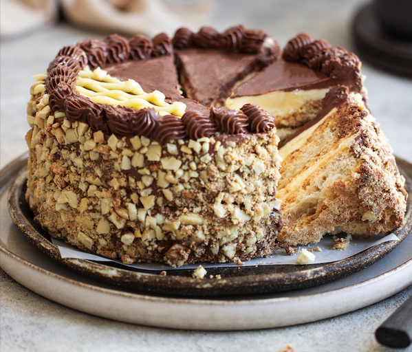
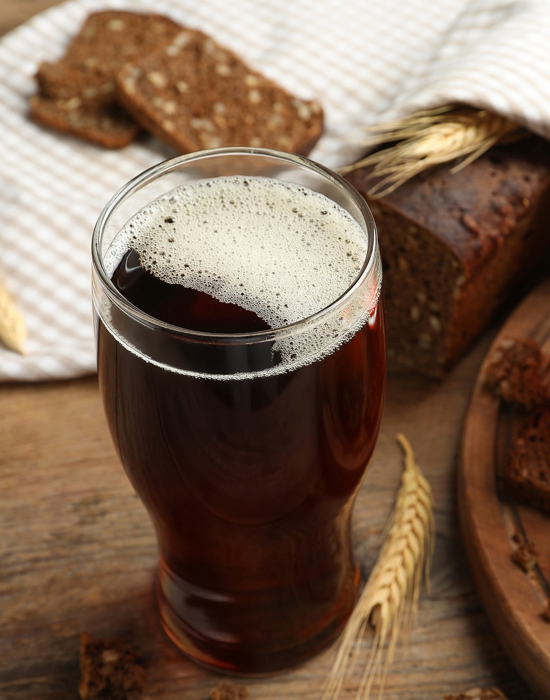

Soups
- Classic borscht with meat and beets, served with sour cream and donuts --- 13 zl
- Soup with mushrooms and potatoes, prepared on the basis of a rich mushroom broth. --- 15 zl
- Green borscht with spinach, potatoes and fresh vegetables --- 13 zl


Hot dishes
- Vareniki with various fillings: potatoes and mushrooms, cottage cheese with cherries, meat with onions. --- 18 zl
- Cabbage rolls stuffed with meat and rice are served with sour cream dressing. --- 15 zl
- Salo in Ukrainian, a traditional Ukrainian dish of lard with garlic and spices. --- 20 zl
- Chicken roast with mushrooms and onions, served with mashed potatoes. --- 15 zl
- Fish cutlets with tartar sauce and fresh vegetables. --- 15 zl
Salads
- Olivier with potatoes, carrots, peas, eggs and boiled meat, seasoned with mayonnaise. --- 18 zl
- Salad "Vitamin" with fresh vegetables, herbs and seasonal fruits, seasoned with lemon-olive oil. --- 13 zl
- Caesar salad with chicken fillet pieces, fresh lettuce, croutons and Caesar dressing. --- 15 zl


Desserts
- Medovik, a classic Ukrainian honey cake with custard. --- 15 zl
- Apple pie with cinnamon and crispy caramel layer. --- 15 zl
- Kiev cake, mousse cake with hazelnut layers and chocolate icing. --- 15 zl
Drinks
- Compote of fresh seasonal fruits. --- 5 zl
- Kvass, a traditional Ukrainian soft drink. --- 7 zl
- Hot chocolate with whipped cream. --- 6 zl
